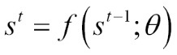
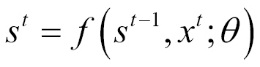
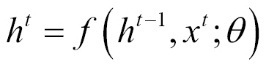
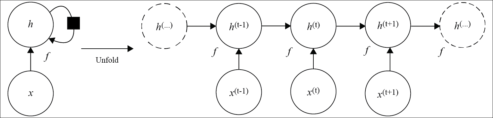
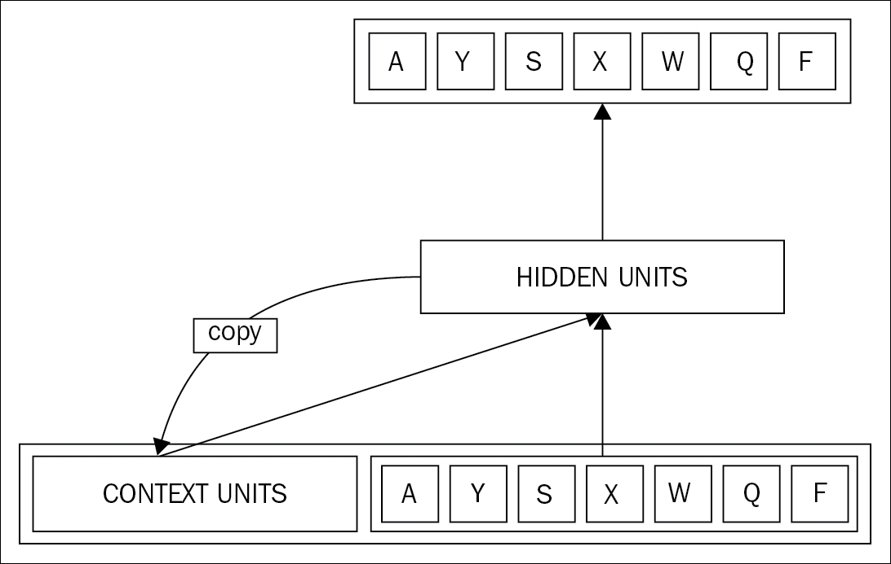
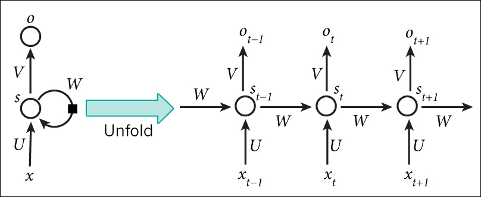
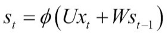
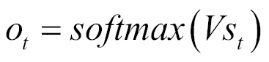

In this section, we will discuss the architecture of the RNN. We will talk about how time is unfolded for the recurrence relation, and used to perform the computation in RNNs.
This section will explain how unfolding a recurrent relation results in sharing of parameters across a deep network structure, and converts it into a computational model.
Let us consider a simple recurrent form of a dynamical system:

In the preceding equation, s (t) represents the state of the system at time t, and θ is the same parameter shared across all the iterations.
This equation is called a recurrent equation, as the computation of s (t) requires the value returned by s (t-1), the value of s (t-1) will require the value of s (t-2), and so on.
This is a simple representation of a dynamic system for understanding purpose. Let us take one more example, where the dynamic system is driven by an external signal x (t), and produces output y (t):

RNNs, ideally, follow the second type of equation, where the intermediate state retains the information about the whole past sequence. However, any equation that involves recurrence can be used to model the RNN.
Therefore, similar to the feed-forward neural networks, the state of the hidden (intermediate) layers of RNNs can be defined using the variable h at time t, as follows:

We will explain the functionality of this preceding equation in a RNN in the next part of this section. As of now, to illustrate the functionality of this hidden layer, Figure 4.2 shows a simple recurrent network with no output. The left side of the figure shows a network whose current state influences the next state. The box in the middle of the loop represents the delay between two successive time steps.
As shown in the preceding recurrent equation, we can unfold or unroll the hidden states in time. The right side of the image shows the unfolded structure of the recurrent network. There, the network can be converted to a feed-forward network by unfolding over time.
In an unfolded network, each variable for each time step can be shown as a separate node of the network.

Figure 4.2: The left part of the figure shows the recurrent network where the information passes through multiple times through the hidden layer with each time step. On the right, we have the unfolded structure of the same network. Each node of this network is associated with one timestamp.
So, from Figure 4.2, the unfolding operation can be defined as an operation that performs the mapping of the circuit on the left-hand side to a computational model split into multiple states on the right-hand side.
Unfolding a network in time provides a few major advantages, which are listed as follows:
As of now, you might have got some idea that the primary difference between a feed forward neural network and recurrent network is the feedback loop. The feedback loop is ingested into its own intermediate outcome as the input to the next state. The same task is performed for every element of the input sequence. Hence, the output of each hidden state depends on the previous computations. In a practical situation, each hidden state is not only concerned about the current input sequence in action, but also about what they perceived one step back in time. So, ideally, every hidden state must have all the information of the previous step's outcome.
Due to this requirement of persistent information, it is said that RNNs have their own memory. The sequential information is preserved as memory in the recurrent network's hidden state. This helps to handle the upcoming time steps as the network cascades forward to update the processing with each new sequence.
Figure 4.3 shows the concept of simple recurrent neural networks proposed by Elman back in 1990 [112]; it shows the illustration of persistent memory for a RNN.
In the next figure, a part of the word sequence AYSXWQF at the bottom represents the input example currently under consideration. Each box of this input example represents a pool of units. The forward arrow shows the complete set of trainable mapping from each sending input unit to each output unit for the next time step. The context unit, which can be considered as the persistent memory unit, preserves the output of the previous steps. The backward arrow, directed from the hidden layer to the context unit shows a copy operation of the output, used for evaluating the outcome for the next time step.
The decision where a RNN reaches at time step t, depends mostly on its last decision of the time step at (t-1). Therefore, it can be inferred that unlike traditional neural networks, RNNs have two sources of input.
One is the current input unit under consideration, which is X in the following figure, and the other one is the information received from the recent past, which is taken from the context units in the figure. The two sources, in combination, decide the output of the current time step. More about this will be discussed in the next section.

Figure 4.3: A simple recurrent neural networks with the concept of memory of RNN is shown in this figure.
So, we have come to know that RNNs have their memory, which collects information about what has been computed so far. In this section, we will discuss the general architecture of RNNs and their functioning.
A typical RNN, unfolded (or unrolled) at the time of the calculation involved in its forward computation is shown in Figure 4.4.
Unrolling or unfolding a network means to write out the network for the complete sequences of input. Let us take an example before we start explaining the architecture. If we have a sequence of 10 words, the RNN would then be unfolded into a 10-layer deep neural network, one layer for each word, as depicted by the following diagram:

Figure 4.4: The figure shows a RNN being unrolled or unfolded into a full network.
The time period to reach from input x to output o is split into several timestamps given by (t-1), t, (t+1), and so on.
The computational steps and formulae for an RNN are listed as follows:

So, the hidden state is a function of the input at time step xt, multiplied by the weight U, and addition of the hidden state of the last time step st-1, which is multiplied by its own hidden-state-to-hidden-state matrix W. This hidden-state-to-hidden-state is often termed as a transition matrix, and is similar to a Markov chain. The weight matrices behave as filters, which primarily decide the importance of both, the past hidden state and the current input. The error generated for the current state would be sent back via backpropagation to update these weights until the error is minimized to the desired value.
Unlike a traditional deep neural network, where different parameters are used for the computation at each layer, a RNN shares the same parameters (here, U, V, and W) across all the time steps to calculate the value of the hidden layer. This makes the life of a neural network much easier, as we need to learn fewer number of parameters.
This sum of the weight input and hidden state is squeezed by the function f, which usually is a nonlinearity such as a logistic sigmoid function, tan h, or ReLU:

The next section shall discuss how to train a RNN through back propagation.